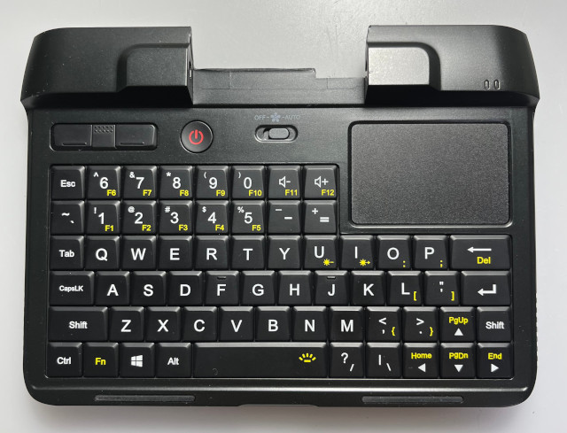
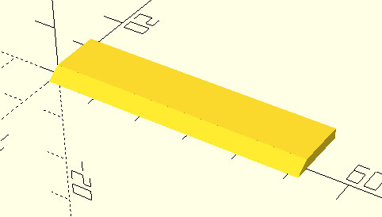
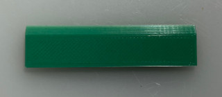
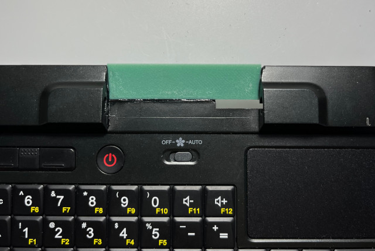
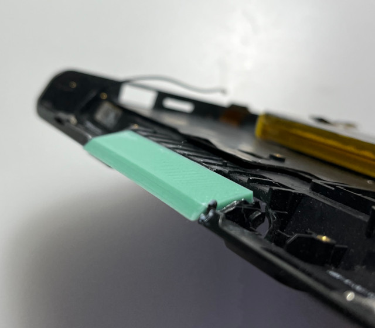
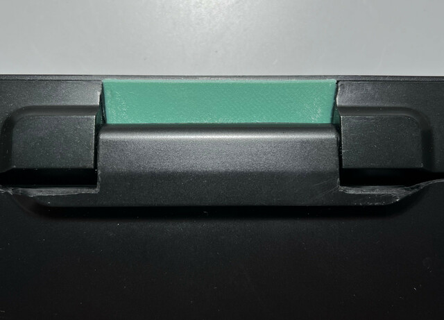
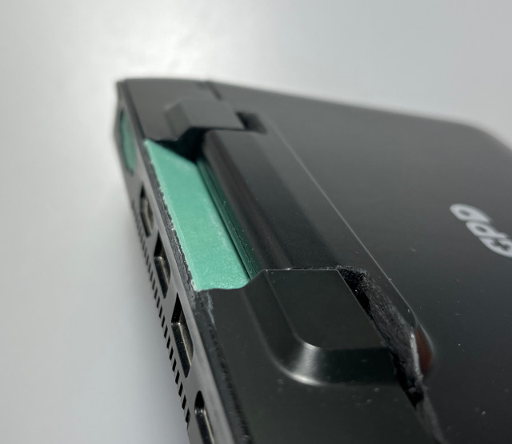
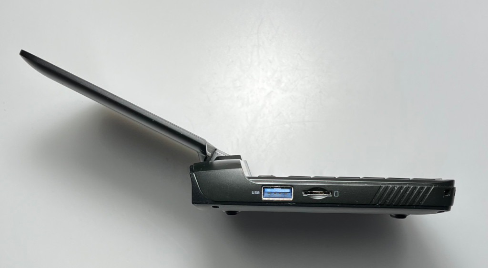

GPD MicroPC這機器的仰角角度真不知道是設計給誰用的，角度太小，導致眼睛以及手的姿勢都相當不舒服，因此，司徒決定動大刀改造，首先切除不需要的部份

difference(){
union(){
cube([52, 10, 2]);
translate([0, -4.1, -0.87]){
rotate([-55, 0, 0]){
cube([52, 2, 5]);
}
}
}
translate([0, -5, -5]){
cube([52, 11, 5]);
}
}
預覽






